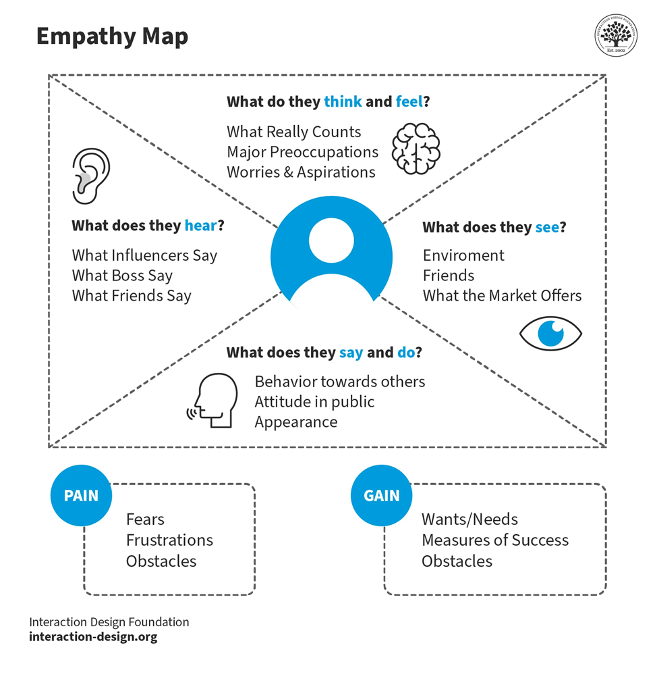
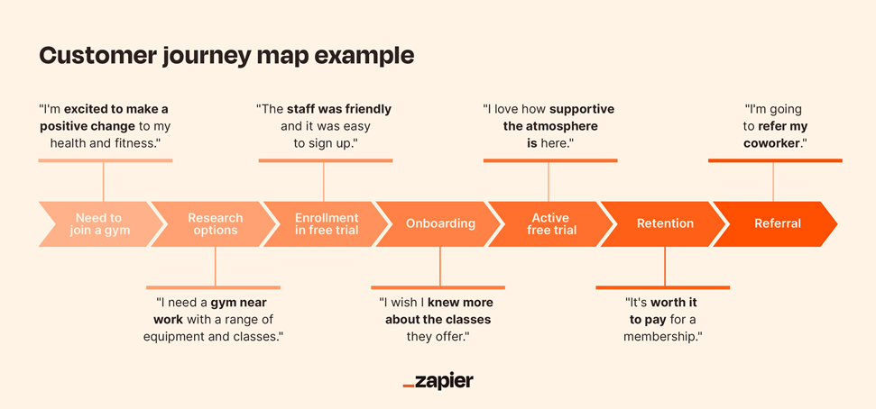

How to create Empathy Map?
Creating an empathy map is a valuable tool in understanding your users' needs, behaviors, and emotions. It helps in human-centered design by allowing teams to build a deeper connection with their audience. Here's a step-by-step guide on how to create an empathy map:
- Step 1: Gather Materials
* Large sheets of paper or whiteboard
* Sticky notes or markers
* Pens
* Your team
- Step 2: Define the Purpose
- Clearly define why you're creating the empathy map and what you aim to achieve. This helps in keeping the team
focused and ensures the map is relevant.
- Step 3: Identify Your User
- Choose a specific user persona or real user data to base your empathy map on. The more specific you can be, the
better.
- Step 4: Create the Empathy Map Template
- Draw a large square divided into four quadrants, with a small circle in the center representing the user. Label
the quadrants as follows.( Says,
Thinks,
Does and
Feels )
- Step 5: Populate the Map
- Work with your team to fill in each section based on your user research data, interviews, observations, and any
other relevant information.
- Step 6: Add Pains and Gains
- WPains: Write down the user's frustrations, fears, obstacles, and challenges.
- Gains: List the user's wants, needs, and measures of success.
- Step 7: Analyze and Synthesize
- Review the empathy map with your team. Look for patterns, insights, and surprises. Discuss how this
understanding can inform your design decisions, product development, or service improvements.
Tips for Effective Empathy Mapping
- Use real data: Base your empathy map on actual user research to ensure
accuracy.
- Improved collaboration: Involve cross-functional teams to get diverse
perspectives.
- Stay User-focused: Keep the user's perspective at the forefront,
avoiding assumptions.
- Iterate: Update the empathy map as you gather more information about
your users.
Example of an Empathy Mapping
Sure, let's create an example empathy map for a user persona of an online grocery shopping service. We'll call our user persona "Emily, the Busy Mom."
User Persona
- Name: Emily
- Age: 35
- Occupation: Marketing Manager
- Family: Married with two children (ages 3 and 6)
- Tech Savvy: Moderate
- ----> Says: "I hope the groceries are fresh."
- ----> Thinks: "Will the delivery be on time?"
- ----> Does: "Check inline reviews from product quality"
- ----> Feels: "Anxious about product quality and delivery. "
This empathy map helps the online grocery service team understand Emily's needs and challenges. Here are some ways to use these insights:
Tools for Emapthy Mapping
Physical Tools: Whiteboards, Sticky notes, Markers.
Digital Tools: Miro, MURAl, UXpressia, Samply


Journey Mapping
What is Journey Mapping?
Journey mapping, also known as customer journey mapping, is a visual representation of the process a customer goes through to achieve a specific goal with your product or service. It highlights the key touchpoints, actions, emotions, pain points, and overall experience from the customer's perspective. Journey maps help organizations understand and improve the customer experience by identifying areas for improvement and opportunities for innovation.
Components of a Journey map
- 1 Persona: Develop a detailed profile of the typical customer who will be the focus of the journey map. Include
demographics, goals, needs, and behaviors.
- 2 scenario: A specific context or situation in which the journey takes place. This scenario defines the scope.
- 3 Stages: Break down the customer journey into distinct stages. Common stages include awareness, consideration,
purchase, onboarding, and retention.
- 4 Touchpoints: Identify all the points of interaction between the customer and the organization.
- 5 Actions: Outline the actions the customer takes at each touchpoint.
- 6 Thoughts: Note what the customer is thinking at each stage of the journey.
- 7 Emotions: Record the customer’s emotions (e.g., excitement, frustration) to understand their experience
better.
- 8 Pain Points: Highlight areas where the customer experiences difficulties or frustrations.
- 9 Opportunities: Identify opportunities to improve the customer experience.
